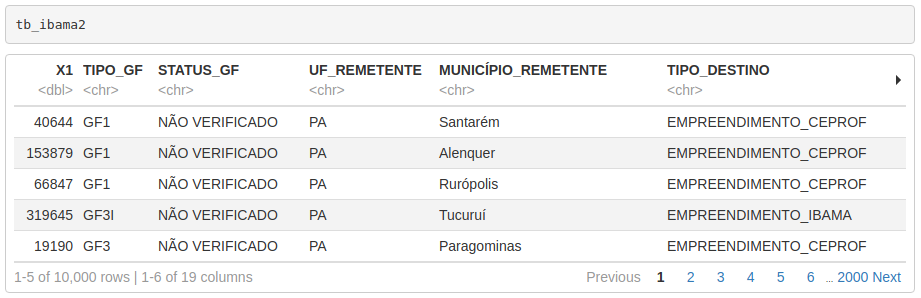

4 Module IV
4.1 String Manipulation in R with stringr
4.1.1 Introduction
The stringr package, as its name suggests, is a package for string manipulation and also for regular expressions. These two techniques are very important in data analysis, because we often deal with text snippets and character columns, where we need to find patterns of words, numbers, emails, phone numbers, names, etc.
All content related to the stringr package will be based on the package introduction page, available at http://stringr.tidyverse.org. It will be like a selected and more user-friendly translation of the content provided by the authors. If you want to go deeper into the subject, you can refer to the book R for Data Science by Hadley Wickham.
There are four main families of functions in the stringr package:
- character manipulation: these functions allow us to manipulate individual characters within strings and within vectors;
- tools for dealing with whitespace, with which we can add, remove and manipulate whitespace;
- locale-sensitive operations - these operations vary depending on location considering the alphabet used in each country;
- pattern matching functions - these functions recognize 4 “engines” for describing patterns. The most common are regular expressions, which we will use in this course.
4.1.2 Operations with individual characters
4.1.2.1 Getting and modifying characters
# loading
library(stringr)To get the length of a string use str_length():
str_length("abc")## [1] 3To access individual characters (positions) or parts of a string, we can use str_sub(). This function takes as arguments a character vector, a start position and an end position. Both positions can receive a positive integer or a negative integer. If the position passed is a positive integer, the position count is made from left to right (from the beginning of the string) until the desired position is reached. When the position passed as argument is a negative integer, the count is made from right to left (from the end of the string) until the position is reached. In both cases the form of position evaluation is inclusive, that is, it includes the number that was passed. If the positions passed exceed the string limits, the result is truncated without returning any warning.
x <- c("abcdef", "ghifjk")
# extracting 3rd letter
str_sub(x, 3, 3)## [1] "c" "i"# from second to second-to-last character
str_sub(x, 2, -2)## [1] "bcde" "hifj"str_sub() can also be used to modify strings:
str_sub(x, 3, 3) <- "X"
x## [1] "abXdef" "ghXfjk"To duplicate individual strings, use str_dup():
str_dup(x, c(2, 3))## [1] "abXdefabXdef" "ghXfjkghXfjkghXfjk"4.1.2.2 Whitespace
The following functions add, remove or modify existing whitespace in strings.
str_pad()fills a string with whitespace to a fixed width. Whitespace can be added to the left, right or both sides. This type of function is very useful for generating.fwftype files, i.e. with fixed widths/sizes for columns.
x <- c("abc", "defghi")
str_pad(x, 10)## [1] " abc" " defghi"str_pad(x, 10, "right")## [1] "abc " "defghi "str_pad(x, 10, "both")## [1] " abc " " defghi "We can also fill the string with other elements instead of whitespace:
str_pad(x, 10, "both", pad="@")## [1] "@@@abc@@@@" "@@defghi@@"str_pad() never shortens a string:
str_pad(x, 4)## [1] " abc" "defghi"Note: If you want to ensure that strings have the same size, combine str_pad() with str_trunc():
x <- c("Short", "This is a long string")
str_trunc(x, 10)## [1] "Short" "This is..."str_pad(x, 10)## [1] " Short" "This is a long string"# x %>%
# str_trunc(10) %>%
# str_pad(10, "right")- The opposite of
str_pad()isstr_trim(), which removes leading and trailing spaces:
x <- c(" a ", "b ", " c")
str_trim(x)## [1] "a" "b" "c"str_trim(x, "left")## [1] "a " "b " "c"- We can use
str_wrap()to modify existing whitespace to “wrap” for example a paragraph of text so that the length of each line is as similar as possible. It’s like justifying the paragraph.
blah_blah_blah <- str_c(
"Roses are red, ",
"Violets are blue, ",
"... In any combination of words ",
" str_wrap gives you a clue "
)
# an alternative to c() for stringscat(str_wrap(blah_blah_blah, width = 40))## Roses are red, Violets are blue, ... In
## any combination of words str_wrap gives
## you a clue# cat is an alternative to print4.1.2.3 Locale sensitive
A good part of stringr package functions are locale sensitive: they will behave differently depending on the country/region where the user is located.
See examples of functions that transform lowercase letters to uppercase and vice versa:
x <- "I like horses."
str_to_upper(x)## [1] "I LIKE HORSES."str_to_title(x)## [1] "I Like Horses."str_to_lower(x)## [1] "i like horses."# See the case of Turkish language which has two types of i: one with "dot" and another without
str_to_lower(x, "tr")## [1] "ı like horses."Sorting strings and their indices:
x <- c("y", "i", "k")
str_order(x) # indices## [1] 2 3 1str_sort(x)## [1] "i" "k" "y"# In Lithuanian language, y is between letters i and k
str_sort(x, locale = "lt")## [1] "i" "y" "k"An important aspect is that the default stringr configuration always comes with English language to ensure identical behavior in any system when using generic functions. This is different from what normally occurs with base R, where the global locale option normally varies with the regional version of the operating system and generates considerable confusion when developing programs.
To get a list of available abbreviations and regions, just run stringi::stri_locale_list().
4.1.3 Pattern matching
The vast majority of stringr functions work with patterns. These functions are parameterized by the type of task they perform and which patterns they match.
4.1.3.1 Tasks
Each matching function has the same first two arguments: a vector of strings to process and a pattern to match. The stringr package provides some functions to: detect str_detect(); locate str_locate(); extract str_extract(); match str_match(), replace str_replace(); and split strings str_split().
Let’s see an example with some strings and a Regular Expression to find US phone numbers:
strings <- c(
"apple",
"212 555 1234",
"212-555-8753",
"Work: 212-555-5835; Home: 646-555-5344"
)
phone <- "([0-9]{3})[- .]([0-9]{3})[- .]([0-9]{4})"str_detect()detects the presence or absence of a pattern and returns a logical vector.str_subset()returns the elements of a character vector that match a regular expression.
To know which positions of strings contain numbers, we can do:
# Which strings contain numbers
str_detect(strings, phone)## [1] FALSE TRUE TRUE TRUEstr_subset(strings, phone)## [1] "212 555 1234"
## [2] "212-555-8753"
## [3] "Work: 212-555-5835; Home: 646-555-5344"str_count()counts the number of matches. To know how many phone numbers there are in each string, we can do:
str_count(strings, phone)## [1] 0 1 1 2str_locate()locates the first position of the searched pattern in each string (element) present in the vector and returns a numeric matrix with columns indicating start and end positions.str_locate_all()locates all matches, returning a list of numeric matrices.
In which position of each string are the phone numbers located?
(loc <- str_locate(strings, phone))## start end
## [1,] NA NA
## [2,] 1 12
## [3,] 1 12
## [4,] 7 18str_locate_all(strings, phone)## [[1]]
## start end
##
## [[2]]
## start end
## [1,] 1 12
##
## [[3]]
## start end
## [1,] 1 12
##
## [[4]]
## start end
## [1,] 7 18
## [2,] 27 38str_extract()extracts text corresponding to the first match within the string, returning a character vector.str_extract_all()extracts all matches and returns a list of character vectors.
str_extract(strings, phone)## [1] NA "212 555 1234" "212-555-8753" "212-555-5835"str_extract_all(strings, phone)## [[1]]
## character(0)
##
## [[2]]
## [1] "212 555 1234"
##
## [[3]]
## [1] "212-555-8753"
##
## [[4]]
## [1] "212-555-5835" "646-555-5344"Note that with str_extract_all(), we can identify exactly in which position of the original vector each string was.
str_extract_all(strings, phone, simplify = TRUE)## [,1] [,2]
## [1,] "" ""
## [2,] "212 555 1234" ""
## [3,] "212-555-8753" ""
## [4,] "212-555-5835" "646-555-5344"str_match()extracts capture groups from regular expressions formed by()only for the first match.str_match_all()extracts capture groups from all matches and returns a list of character matrices.
# Pull out the three components of the match
str_match(strings, phone)## [,1] [,2] [,3] [,4]
## [1,] NA NA NA NA
## [2,] "212 555 1234" "212" "555" "1234"
## [3,] "212-555-8753" "212" "555" "8753"
## [4,] "212-555-5835" "212" "555" "5835"str_match_all(strings, phone)## [[1]]
## [,1] [,2] [,3] [,4]
##
## [[2]]
## [,1] [,2] [,3] [,4]
## [1,] "212 555 1234" "212" "555" "1234"
##
## [[3]]
## [,1] [,2] [,3] [,4]
## [1,] "212-555-8753" "212" "555" "8753"
##
## [[4]]
## [,1] [,2] [,3] [,4]
## [1,] "212-555-5835" "212" "555" "5835"
## [2,] "646-555-5344" "646" "555" "5344"str_replace()replaces the first occurrence where there was matching and returns a character vector.str_replace_all()replaces all matches.
This is a very interesting function to use when we’re working with identified data and want to hide SSNs, phone numbers, etc. See an example with phone numbers.
str_replace(strings, phone, "XXX-XXX-XXXX")## [1] "apple"
## [2] "XXX-XXX-XXXX"
## [3] "XXX-XXX-XXXX"
## [4] "Work: XXX-XXX-XXXX; Home: 646-555-5344"str_replace_all(strings, phone, "XXX-XXX-XXXX")## [1] "apple"
## [2] "XXX-XXX-XXXX"
## [3] "XXX-XXX-XXXX"
## [4] "Work: XXX-XXX-XXXX; Home: XXX-XXX-XXXX"str_split_fixed()splits the string into a fixed number of parts based on the pattern passed as argument and returns a character matrix.str_split()separates a string into a variable number of parts and returns a list of character vectors.
str_split("a-b-c", "-")## [[1]]
## [1] "a" "b" "c"str_split_fixed("a-b-c", "-", n = 2)## [,1] [,2]
## [1,] "a" "b-c"4.1.3.2 Indices and matching:
str_subset() allows extracting elements from a string vector, if it contains the character or group of characters informed.
fruit <- c("apple", "banana", "pear", "pineapple")
str_subset(fruit, "a")## [1] "apple" "banana" "pear" "pineapple"str_which() returns the position of the target vector, where a match was found for a certain character or set of characters informed.
str_which(LETTERS, "F")## [1] 6# str_which(LETTERS, "F|Y")4.1.4 Section References
Wickham, H. (2019). stringr: Simple, Consistent Wrappers for Common String Operations. R package version 1.4.0. https://CRAN.R-project.org/package=stringr.
____. (2020). stringr vignette: Introduction. URL http://stringr.tidyverse.org
Wickham, H.; Grolemund, G. (2016). R for Data Science: Import, Tidy, Transform, Visualize, and Model Data. O’Reilly Media. december 2016. 522 pages. Available at: www.r4ds.co.nz
4.2 Regular Expressions (REGEX)
4.2.1 Introduction
Programming languages have more than one type of pattern search mechanism in strings. Regular expressions are the most used mechanism. Therefore, it will be our focus in this course. However, know that the stringr package also brings implementations of the other 3 types, which we describe below:
- Fixed bytewise matching with the
fixed()function; - Locale-sensitive character matching with
coll()(collation search); - Text boundary analysis with the
boundary()function.
If you’re interested in the subject, you can seek more information in the stringr package documentation.
But what exactly would Regular Expressions be?
Regular Expressions are concise and flexible forms to describe patterns (that we’re searching for) in strings. In this section, we’ll describe the main aspects related to constructing regular expressions. For this we’ll use some of the examples described in the stringr package vignettes.
First we’ll make a general introduction about regular expressions and then we’ll see examples using the stringr package.
Why are regular expressions important?
Regular expressions allow us to describe in more general terms what we want to search in a string. Normally, it’s more efficient to use regular expressions, because if we search for simple characters, we’ll only get the exact match for that character. Have you thought about how we would search only for phone numbers, email addresses, SSNs or EINs in the middle of data (for example web pages) that are not exactly organized in columns?
It should be noted that regular expressions is a technique used practically throughout the programming world. It’s not a particularity only of the R language.
Regular expressions (regex), in general, are constructed from the combination of 3 components:
- literal characters: which will only match if there are identical literal characters in the data;
- character classes: which allow matching by multiple characters - they are composed of characters inside two brackets
[ ];
- character classes: which allow matching by multiple characters - they are composed of characters inside two brackets
- modifiers or anchors: which will operate on characters, classes and combinations of both.
4.2.2 REGEX Examples using stringr
4.2.2.1 Literal matches (basic match/literal characters)
The simplest pattern for matching is:
x <- c("apple", "banana", "pear")
str_extract(x, "an")## [1] NA "an" NAWe can ignore uppercase and lowercase letters with ignore_case = TRUE:
bananas <- c("banana", "Banana", "BANANA")
str_detect(bananas, "banana")## [1] TRUE FALSE FALSEstr_detect(bananas, regex("banana", ignore_case = TRUE))## [1] TRUE TRUE TRUEContinuing with the examples, the next step is to know the role played by .. Its function is to search for any character except a newline (\n):
str_extract(x, ".a.")## [1] NA "ban" "ear"But if you want to find even characters that indicate a newline, you can “set” dotall = TRUE inside the function responsible for the matching mechanism, which is the regex() function:
str_detect("\nX\n", ".X.")## [1] FALSEstr_detect("\nX\n", regex(".X.", dotall = TRUE))## [1] TRUE4.2.2.2 Escaping characters
If . matches any character, how can we do literal matching of a period “.” in the data? We’ll have to use an escape character to tell R that we want a literal match and not use the special behavior of .. In REGEX, a backslash \ is used for this purpose.
So, to search for a simple “.” in the data, we use \.. But there’s a catch: the backslash is also treated as a special character in R when it comes to strings. Therefore, we would have to add another backslash forming the string \\. in order to match a simple period in the data.
dot <- "\\."
# But see that as REGEX, there's only one backslash: \.
writeLines(dot)## \.# This tells R to explicitly search for a period
str_extract(c("abc", "a.c", "bef"), "a\\.c")## [1] NA "a.c" NATo help you understand how many backslashes you’ll need to write in the code, let’s think that there are two different mechanisms: the R interpreter and the REGEX mechanism. When you send a regular expression to the interpreter, it will pass through a filter where R rules will be applied. After this first filter, the expression goes to a new instance, where the REGEX mechanism will act.
Think of these steps as a toll booth. For each backslash that needs to reach the last toll stage, you also need a backslash \ to “pay the toll” of the first stage. Backslashes \, are therefore your currency and you can’t carry more or less “money” than you need. If the expression has to arrive at the REGEX stage as \., so that the last backslash is seen as a special character that de-characterizes the special functioning of ., thus making a literal match, you need to send one more backslash \ to be consumed at the R interpreter stage. That’s why, in your code, you should write \\..
Have you thought, then, how we would do literal matching of a backslash in a string?
Let’s think again as a toll booth, starting from the last stage to the first. In the REGEX mechanism, last toll stage, the expression must arrive with two backslashes \\: the left one acting as a special character, which eliminates the special function of the right backslash. Therefore, to carry two backslashes to the end of the process, you need two other backslashes \\ to be consumed at the R interpreter stage. Therefore, to do literal matching of a backslash in a string, your code should be written as \\\\.
What happens, in fact, is that the interpreter separates each pair of backslashes, making the left one remove the special functioning of the right backslash in each pair. Thus, only two backslashes arrive at the REGEX mechanism.
x <- "a\\b"
writeLines(x)## a\bstr_extract(x, "\\\\")## [1] "\\"From now on, when we refer to regular expressions, we’ll use the form with only one \. However, know that in your code in R functions, you should add one more backslash \\.
4.2.2.3 Matching multiple characters (classes)
First, we’ll see some shortcuts for character classes:
| shortcuts | classes |
|---|---|
| \w | alphanumeric and _ (any word) |
| \W | non-alphanumeric (anything different from words and _) |
| \d | digits |
| \D | non-digits |
| \s | space |
| \S | non-space |
Let’s move on to examples:
str_extract_all("Don't eat that!", "\\w+")[[1]]## [1] "Don" "t" "eat" "that"str_split("Don't eat that!", "\\W")[[1]]## [1] "Don" "t" "eat" "that" ""str_extract_all("1 + 2 = 3", "\\d+")[[1]]## [1] "1" "2" "3"(text <- "Text \t with\n\t\tbad spacing \f")## [1] "Text \t with\n\t\tbad spacing \f"str_replace_all(text, "\\s+", " ")## [1] "Text with bad spacing "Another interesting shortcut is \b which searches for word boundaries/borders, i.e., transitions between word characters and non-word characters. \B does the opposite.
str_replace_all("The quick brown fox", "\\b", "_")## [1] "_The_ _quick_ _brown_ _fox_"str_replace_all("The quick brown fox", "\\B", "_")## [1] "T_h_e q_u_i_c_k b_r_o_w_n f_o_x"You can consult other interesting shortcuts in this stringr package vignette.
There’s also the possibility of creating our own classes using []:
[abc]: matches a, b or c;[a-z]: matches any lowercase character between a and z;[A-Z]: matches any uppercase character between A and Z;[^abc]: matches anything except a, b, or c;[\^\-]: matches^or-. Remember to add one more backslash in front of each backslash when passing the command in R
There are also several pre-built classes we can use with brackets:
[:punct:]: punctuation;[:alpha:]: letters;[:lower:]: lowercase letters;[:upper:]: UPPERCASE LETTERS;[:digit:]: digits;[:alnum:]: letters and numbers.[:cntrl:]: control characters.[:graph:]: letters, numbers and punctuation.[:print:]: letters, numbers, punctuation and whitespace.[:space:]: space characters (equivalent to\s).[:blank:]: space and tab.
These expressions go inside other brackets:
y <- c(1234, "R", "UNF", " ", "Hello, how are you?")
str_extract_all(y, "[[:digit:]]")## [[1]]
## [1] "1" "2" "3" "4"
##
## [[2]]
## character(0)
##
## [[3]]
## character(0)
##
## [[4]]
## character(0)
##
## [[5]]
## character(0)str_extract_all(y, "[[:digit:]a]")## [[1]]
## [1] "1" "2" "3" "4"
##
## [[2]]
## character(0)
##
## [[3]]
## character(0)
##
## [[4]]
## character(0)
##
## [[5]]
## [1] "a"str_extract_all(y, "[[:digit:]hw]")## [[1]]
## [1] "1" "2" "3" "4"
##
## [[2]]
## character(0)
##
## [[3]]
## character(0)
##
## [[4]]
## character(0)
##
## [[5]]
## [1] "h" "w"str_extract_all(y, "[y[:upper:]w]")## [[1]]
## character(0)
##
## [[2]]
## [1] "R"
##
## [[3]]
## [1] "U" "N" "F"
##
## [[4]]
## character(0)
##
## [[5]]
## [1] "H" "w" "y"4.2.2.4 Alternation Operator
| is the alternation operator that allows choosing between one or more possible matches. abc|def will match abc or def.
str_detect(c("abc", "def", "ghi"), "abc|def")## [1] TRUE TRUE FALSE4.2.2.5 Grouping
Parentheses can serve to alter precedence rules or form groups. The same thing we saw in Module 1 to alter precedence rules applies to REGEX:
str_extract(c("grey", "gray"), "gre|ay")## [1] "gre" "ay"str_extract(c("grey", "gray"), "gr(e|a)y")## [1] "grey" "gray"Parentheses define groups and we can backreference these groups using \group_number to indicate that groups can repeat more times, as well as the order in which they would repeat in the string.
pattern <- "(1|2)(3|4)\\1"
combinations <- list("1213", "1413", "2324", "1111", "2222", "1415", "1313", "1331")
combinations %>%
str_subset(pattern)## [1] "1413" "2324" "1415" "1313"pattern2 <- "(1|2)(3|4)\\1\\2"
combinations %>%
str_subset(pattern2)## [1] "1313"pattern3 <- "(1|2)(3|4)\\2\\1"
combinations %>%
str_subset(pattern3)## [1] "1331"4.2.2.6 Anchors or modifiers
Anchoring means establishing a pattern for the beginning or end of the string we’re searching for.
^searches for the pattern at the beginning of the string;$searches for the pattern at the end of the string.
x <- c("apple", "banana", "pear")
str_extract(x, "^a")## [1] "a" NA NAstr_extract(x, "a$")## [1] NA "a" NA4.2.2.7 Repetitions
We can control how many times a pattern appears in a certain part of the string with:
?: 0 or 1.+: 1 or more.*: 0 or more.
x <- "1888 is the longest year in Roman numerals: MDCCCLXXXVIII"
str_extract(x, "CC?")## [1] "CC"str_extract(x, "CC+")## [1] "CCC"str_extract(x, 'C[LX]+')## [1] "CLXXX"str_match("banana", '(na)+')## [,1] [,2]
## [1,] "nana" "na"We can specify the exact number of repetitions we expect with:
{n}: exactly \(n\) times;{n,}: \(n\) times or more;{n,m}: between \(n\) and \(m\) times.
str_extract(x, "C{2}")## [1] "CC"str_extract(x, "C{2,}")## [1] "CCC"str_extract(x, "C{2,3}")## [1] "CCC"There are several other patterns and expressions that can be used. Search ??stringi_search-regex or visit the stringr website.
4.2.3 Section References
Wickham, H. (2019). stringr: Simple, Consistent Wrappers for Common String Operations. R package version 1.4.0. https://CRAN.R-project.org/package=stringr.
____. (2020). stringr vignette: Introduction. URL http://stringr.tidyverse.org
Wickham, H.; Grolemund, G. (2016). R for Data Science: Import, Tidy, Transform, Visualize, and Model Data. O’Reilly Media. december 2016. 522 pages. Available at: www.r4ds.co.nz
4.3 Reports and Reproducible Research with rmarkdown
4.3.1 Introduction
We’ve reached a point in the course where we already have powerful tools to analyze and process data. However, nowadays, there’s another stage as important as the previous ones in Data Science: sharing and communicating your analyses.
For this purpose, R is certainly the most powerful tool nowadays: you can integrate from the data analysis stage to sharing your codes, graphs and findings through reports, slides, \(\TeX\) articles and even books. This course material itself was all made within the R language.
In this section, we’ll focus on report production. We’ll also see how to make these reports adapt automatically to changes in the data that originate your analysis. In addition to this practical issue, all data and codes used in an analysis can be shared with your team, which reinforces the reproducibility character of the R language. Anyone else can easily replicate and verify/validate the results obtained by you.
The tool that allows us to do most of these things we mentioned above is the rmarkdown package. It’s a package that gravitates around the tidyverse core. rmarkdown unites text writing and code writing in a single place, through markdown markup language. The markup language has a quite simple syntax that makes text production very agile, unlike what occurs with \(HTML\) and \(\LaTeX\), for example. This means you don’t need to leave RStudio or even switch windows or tabs to include text, figures, outputs or code chunks in an R Markdown document. The rmarkdown package is so surprising that from it emerged derivative packages that allow creating websites and blogs with blogdown and making books and course materials like this one you’re reading through the bookdown package, among others.
To start making a report in R Markdown, you need to create a new .Rmd file. Click on  , as you normally do to create a script, only this time select “R Markdown” .
, as you normally do to create a script, only this time select “R Markdown” .
A new window will open in RStudio, where you should choose what type of output file you want, whether HTML, PDF or .docx, as well as its name and your report title. Let’s choose PDF.
Note that a new tab is automatically created in RStudio, with a pre-formatted .Rmd report template.
ATTENTION: If this is your first time using R Markdown on Windows, RStudio itself will offer to install some necessary packages (and their dependencies) to run rmarkdown. Among them will be the tinytex package. This is a package that performs the minimal installation of \(\LaTeX\) libraries necessary for generating .pdf documents from R Markdown. After installing the packages, just run the code below in the console and then restart your RStudio session.
tinytex::install_tinytex()In the created tab, there’s all the data you informed previously and also a series of automatically created examples depicting the functioning of a simple R Markdown report. Note that all text is editable.
Documents are generated using the knitr package. This package functions as a support package for rmarkdown, but you don’t need to know it in depth. Knit in English means to knit or unite. And that’s exactly what it does, it stitches and unites all elements that you come to build or program with R Markdown. If you already want to generate a report from the example presented to you when creating a new .Rmd file, you can do so by clicking the Knit button  in the RStudio window. After choosing a name and saving your
in the RStudio window. After choosing a name and saving your .Rmd file, if you chose the PDF option, you’ll have a .pdf extension file. Test changing the destination files: .html and .docx directly in the Knit button.
TIP: For each new command you learn throughout this section, we suggest generating a new report, so you can follow the modifications made in the document. Therefore, we also suggest you delete all content from the suggestion report created when opening a new .Rmd document, keeping only the header data: title, author, date and output.
4.3.2 Header
In the header you can specify all technical aspects of your text formatting in R Markdown. There are several options, but we’ll focus on the most basic ones that appear on the screen at this moment.
titlecontains your document title;authoryour name;datethe document generation date;outputthe type of document to be generated, whether HTML, PDF or Word.
Some useful tricks:
- If you want to add a co-author, use:
author:
- Author1 Name
- Author2 Name- To add a subtitle, just write:
title: "Your Title"
subtitle: "Subtitle for the report"- So you don’t have to manually change the date every time you run Knit, use the
format()function together withSys.time(). Note that this code is passed between backticks``.
date: "`r format(Sys.time(), '%B %d, %Y')`"4.3.3 Text Formatting
R Markdown’s text formatting syntax is very simple. That’s why text production with it is very fast. This comes at the cost of not having as much flexibility in altering textual elements as in a language like \(\LaTeX\), but still, the formatting possibilities are quite considerable.
4.3.3.1 Titles
The # symbol is used to define titles. For each # added, you descend one hierarchy and create a subtitle of the previous title. The fewer # there are before your title, the greater the hierarchy and consequently the larger the font.
# Article Title
## Subtitle
### Section
#### Subsection4.3.3.2 Paragraphs
To write a paragraph just start writing any text. To add paragraphs just skip a line, leaving a blank space between paragraphs
This is the first paragraph of your text. You can write normally and it
will appear in your report.
After skipping a line, you start a new paragraph. Add the ideas you
want in this second paragraph4.3.3.3 Font formatting
You can apply italic and bold formatting to specific words, expressions or complete excerpts of your text, placing the word or excerpt in question between asterisks.
For bold formatting, use **word or excerpt**: word or excerpt.
For italic formatting, use *word or excerpt*: word or excerpt.
You can get the same effect using underscore instead of asterisks, as in these examples _word or excerpt_: word or excerpt; and __word or excerpt__: word or excerpt.
4.3.3.4 Footnotes
Footnotes can be inserted in the text using the scheme word^[Text that will go to the footnote about the word.]
In this text we're going to insert a footnote about the word Statistics^[Statistics
is the discipline that consists of collecting, organizing, analyzing and presenting data.]4.3.3.5 Making lists and item enumeration
4.3.3.5.1 Unnumbered lists
To create unnumbered lists, we can use either * or -:
* item X
* item Y
* item Z- item X
- item Y
- item Z
- item X
- item Y
- item Z- item X
- item Y
- item Z
In unnumbered lists, to create subitems, you must give 4 spaces or TAB from the left margin and use - or +:
* item X
- subitem
* item Y
- subitem
+ subsubitem
* item Z
+ subitem
+ subitem- item X
- subitem
- item Y
- subitem
- subsubitem
- subitem
- item Z
- subitem
- subitem
4.3.3.5.2 Numbered lists
To create numbered lists, we use the numeral accompanied by a period: 1., 2., 3. and so on. For creating subitems, in case of numbered lists, use two TAB or 4 spaces followed by -.
1. item A
- subitem
2. item B
- subitem
- subitem
2. item C
- subitem
- subitem- item A
- subitem
- item B
- subitem
- subitem
- item C
- subitem
- subitem
4.3.3.6 Tables
Tables can be added using | to separate columns and ------ to separate the header, containing column names. Note that the straight bars that separate columns must be aligned.
column1 | column2 | column3
--------|----------|--------
Name1 | Address1 | Value1
Name2 | Address2 | Value2
Name3 | Address3 | Value3| column1 | column2 | column3 |
|---|---|---|
| Name1 | Address1 | Value1 |
| Name2 | Address2 | Value2 |
| Name3 | Address3 | Value3 |
4.3.4 Inserting external figures
You can include in your report external figures, that is, figures that are not generated from R. You can reference both figures that are stored locally on your machine and figures available on the web.


Web Figure Description
Logo of one of my packages
4.3.5 Inserting links
The process of inserting links follows a very similar approach to inserting external figures. The difference is that you won’t need ! anymore. Also, only the text inside brackets [] will appear to the reader. When clicked, they will be directed to the link to be passed inside parentheses ().
Click on this [LINK](https://www.unf.edu).
File available at [https://www.unf.edu](https://www.unf.edu).Click on this LINK.
File available at https://www.unf.edu.
4.3.6 Mathematical formulas
You can insert mathematical formulas using \(\LaTeX\) principles. See the probability density function of a Normal distribution. For this, you must pass the formula between double $$. Note how elegant the formatting is.
$$
f(x;\mu,\sigma^2) = \frac{1}{\sigma\sqrt{2\pi}}
e^{ -\frac{1}{2}\left(\frac{x-\mu}{\sigma}\right)^2 }
$$\[ f(x;\mu,\sigma^2) = \frac{1}{\sigma\sqrt{2\pi}} e^{ -\frac{1}{2}\left(\frac{x-\mu}{\sigma}\right)^2 } \]
If you want to present some formula in the middle of a paragraph text, pass the formula only between two simple $:
The probability density function of the Normal Distribution is given by $f(x;\mu,\sigma^2) =
\frac{1}{\sigma\sqrt{2\pi}} e^{ -\frac{1}{2}\left(\frac{x-\mu}{\sigma}\right)^2 }$.The probability density function of the Normal Distribution is given by \(f(x;\mu,\sigma^2) = \frac{1}{\sigma\sqrt{2\pi}} e^{ -\frac{1}{2}\left(\frac{x-\mu}{\sigma}\right)^2 }\).
4.3.7 Code insertion and execution
The biggest advantage of R Markdown is probably the possibility of joining code, outputs and text all in the same place in a very simple and natural way.
4.3.7.1 Simple insertion
To present your code along a line, without necessarily executing it, use simple backticks.
In R, we can create a numeric vector x through the code `x <- c(1:10)`.In R, we can create a numeric vector x through the code x <- c(1:10).
If we need to present a larger piece of code, we can do it between triple backticks ```, forming a block:
This is a larger piece of code:
```
x <- c(1:10)
sum(x)
```
Which results in:
This is a larger piece of code:
x <- c(1:10)
sum(x)4.3.7.2 Insertions with execution and other controls
To start presenting your codes together with respective outputs (which include graphs), we use what we call chunks, which are nothing more than pieces of code to be executed during document processing. rmarkdown and its interaction with RStudio are so sophisticated that, if you have other languages installed on your machine, you can even change the R language display format to Python for example. However, our focus will be only on configuring the most used parameters.
Initially, to create an R code chunk, you must use the same triple backticks ``` from the previous example, accompanied by the notation {r}. Don’t forget to close the chunk with the same triple quotes.
```{r}
x <- 1:10
sum(x)
```As a result, we now have the printing of the output of the previous code:
x <- 1:10
sum(x)## [1] 55TIP: It’s also possible to execute code snippets inline, in the middle of paragraphs. For this, we use `r sum(x)`
For example: The sum of vector x is `r sum(x)`.
Which results in:
The sum of vector x is 55.
4.3.7.2.1 Main chunk options
The main chunk options are:
results: specifies how, and if, chunk results will be shown;- options:
markup(default): displays results normallyhide: doesn’t display outputs in final reporthold: displays results only at end of reportasis: doesn’t reformat results, displaying (useful when outputs are HTML code, for example)
- options:
echo: specifies if chunk code will be displayed- options:
TRUE(default): displays codes above outputFALSE: displays only output generated by chunk
- options:
eval: specifies if chunk will be executed or not- options:
TRUE(default): executes chunkFALSE: doesn’t execute chunk (useful when we want to display only codes and not their output)
- options:
messageandwarning: defines if messages and other warnings generated during code execution- options:
TRUE(default): displays messages and warnings generated during chunk executionFALSE: suppresses display of messages and warnings (useful to suppress package loading messages)
- options:
fig.cap: specifies a description for figure generated in chunkfig.align: defines alignment of figure generated in chunk- options:
center(default): alignment at document centerleft: left alignmentright: right alignment
- options:
fig.heightandfig.width: defines figure height and width in inches - default is size 7
If nothing is specified for a certain option, default configurations are used in code evaluation and results display.
These options must be passed in chunk headers, next to the letter r and inside braces {}, for example:
```{r, echo=FALSE, message=FALSE}
library(dplyr)
x <- 1:10
x %>%
sum()
```You can also assign names to your chunks. This is highly recommended when producing relatively large reports with several chunks, as it will facilitate identification of eventual errors during document generation process. Names must be informed before the first comma, at a space distance from letter r: {r chunk_name, options}
Let’s see some examples, where we create some named chunks, to read one of the databases from previous modules and plot a graph using ggplot2:
```{r loading, message=FALSE}
library(readr)
library(dplyr)
library(nycflights13)
# Loading flights data
flights_data <- flights
# Creating summary by carrier
carrier_summary <- flights_data %>%
group_by(carrier) %>%
summarise(
total_flights = n(),
avg_delay = mean(dep_delay, na.rm = TRUE),
avg_distance = mean(distance, na.rm = TRUE)
) %>%
arrange(desc(total_flights))
``````{r plot, fig.cap="Source: nycflights13 package", fig.height=5, fig.width=7, fig.align="center"}
library(ggplot2)
carrier_summary %>%
ggplot(aes(x = reorder(carrier, -total_flights), y = total_flights)) +
geom_col(fill = "steelblue") +
labs(title = "Total Flights by Carrier",
x = "Carrier",
y = "Number of Flights") +
theme_minimal() +
theme(axis.text.x = element_text(angle = 45, hjust = 1))
```Which would result in:
library(readr)
library(dplyr)
library(nycflights13)
# Loading flights data
flights_data <- flights
# Creating summary by carrier
carrier_summary <- flights_data %>%
group_by(carrier) %>%
summarise(
total_flights = n(),
avg_delay = mean(dep_delay, na.rm = TRUE),
avg_distance = mean(distance, na.rm = TRUE)
) %>%
arrange(desc(total_flights))library(ggplot2)
carrier_summary %>%
ggplot(aes(x = reorder(carrier, -total_flights), y = total_flights)) +
geom_col(fill = "steelblue") +
labs(title = "Total Flights by Carrier",
x = "Carrier",
y = "Number of Flights") +
theme_minimal() +
theme(axis.text.x = element_text(angle = 45, hjust = 1))Figure 4.1: Source: nycflights13 package
4.3.8 More sophisticated tables
When we use a tibble or data frame and the destination output is an HTML file, we benefit from the fact that R Markdown recognizes the format and prints the tibble or data frame content as an R Markdown table. For this just include the following lines in the YAML header, changing
---
title: "Title"
output:
html_document:
df_print: <option>
---Let’s use the df_print: paged option, which will make the table printed in a paginated way, displaying only a few lines (and columns) at a time and allowing users to navigate through its content interactively. After changing the header, just call the carrier_summary object from within a chunk.
```{r table, cols.print = 5, rows.print = 5}
carrier_summary
```Note that the cols.print and rows.print arguments control the number of columns and rows to be displayed in each pagination.
The result will be the following:

TIP: If you want to better control table outputs, or seek to generate more sophisticated tables in PDF or Word reports, we can use the knitr::kable function inside an R Markdown chunk.
knitr::kable(carrier_summary[1:5, 1:4], format = "latex")In the code above, we present an extract of data (first 5 rows and first 4 columns) from the data frame named carrier_summary that we used throughout the course. The format = latex option is suitable for producing tables in \(\LaTeX\) style.

If the goal is to make the table look even better you can use the booktabs = TRUE option, which makes the pandoc engine use the \(\LaTeX\) booktabs package to generate the table. There are several other options to further improve table style, such as adding footnotes, titles, colors, etc. For this you should investigate other options of the kable function itself and the kableExtra package that expands customization possibilities.
4.3.9 Section References
Allaire, J. J.; Xie, Y.; McPherson, J.; Luraschi, J.; Ushey, K.; Atkins, A.; Wickham, H.; Cheng, J.; Chang, W.; Iannone, R. (2019). rmarkdown: Dynamic Documents for R. R package version 1.13. URL https://rmarkdown.rstudio.com.
Xie, Y. (2019). R Markdown Cookbook. CRS Press. Available at: https://bookdown.org/yihui/rmarkdown-cookbook/
Xie Y.; Allaire, J. J.; Grolemund, G. (2018). R Markdown: The Definitive Guide. Boca Raton, Florida: Chapman; Hall/CRC. Available at: https://bookdown.org/yihui/rmarkdown.
R MARKDOWN REFERENCE GUIDE. Available at: https://rstudio.com/wp-content/uploads/2015/03/rmarkdown-reference.pdf.
4.3.10 Exercises
Choose a report you worked on recently and try to reproduce all of it or just a section using R Markdown knowledge. Give preference to works that involve data that allow applying most of the techniques seen throughout the course.
Create a simple R Markdown report about a topic of your choice (could be about Jacksonville, UNF, your major, etc.) that includes:
- At least 3 different heading levels
- Bold and italic text
- A numbered list and an unnumbered list
- A table
- An external image or link
- A mathematical formula
- At least 2 code chunks with different options
Practice with the
nycflights13dataset:- Create an R Markdown document that analyzes flight delays
- Include at least one table and one plot
- Use inline R code to report summary statistics
- Export to both HTML and PDF formats